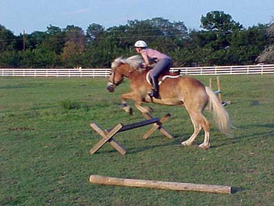

06/20/01
Fun with Jumping
He's saying, 'Hey, where are the jumps?'

Up...
...and over.
I could tell he was looking at it, but he didn't hesitate first time over.
Kinda hard to see around that mane. (next time I'll work on sitting up a bit more - no need to crouch over jumps this low)
I don't mind if he takes off early at this stage. He wasn't rushing, but he was eager, and willing to pick up a canter a few strides back.
Look at those knees. We raised the jump, and he hit it once. This was the jump after that.
After all that dressage work, this is so much fun!!!
Bart said this was his favorite picture. I know who's not going to be doing a whole lot of dressage the month of July.
Return to home page